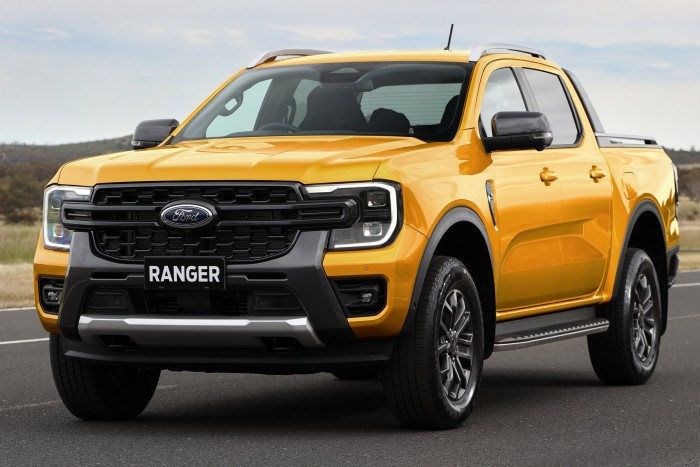
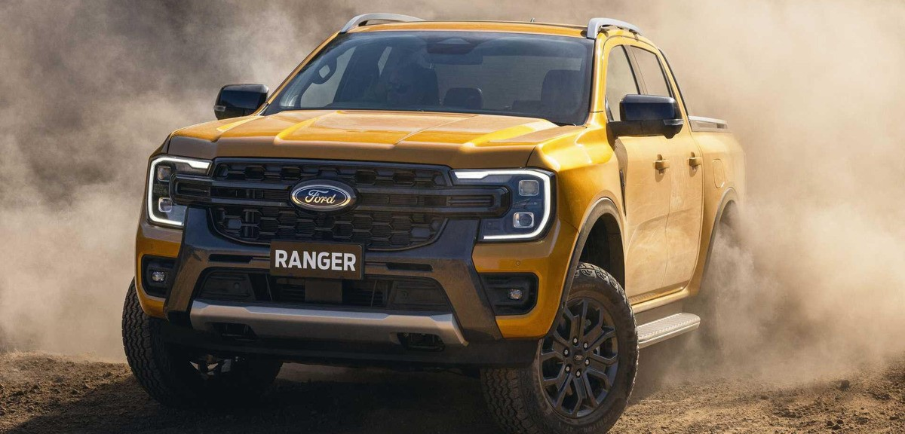
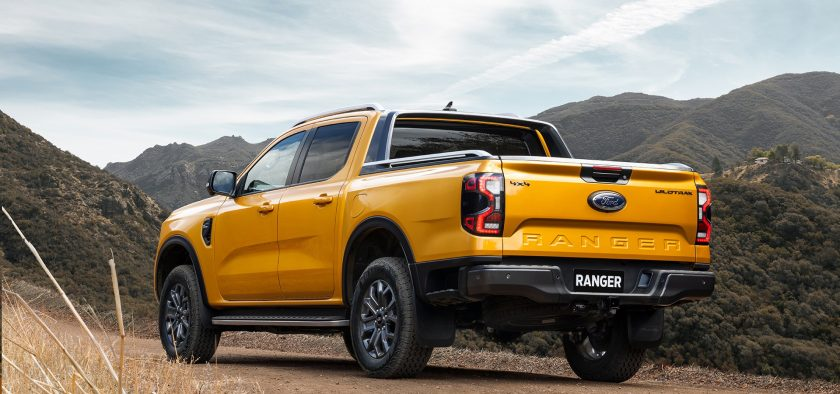
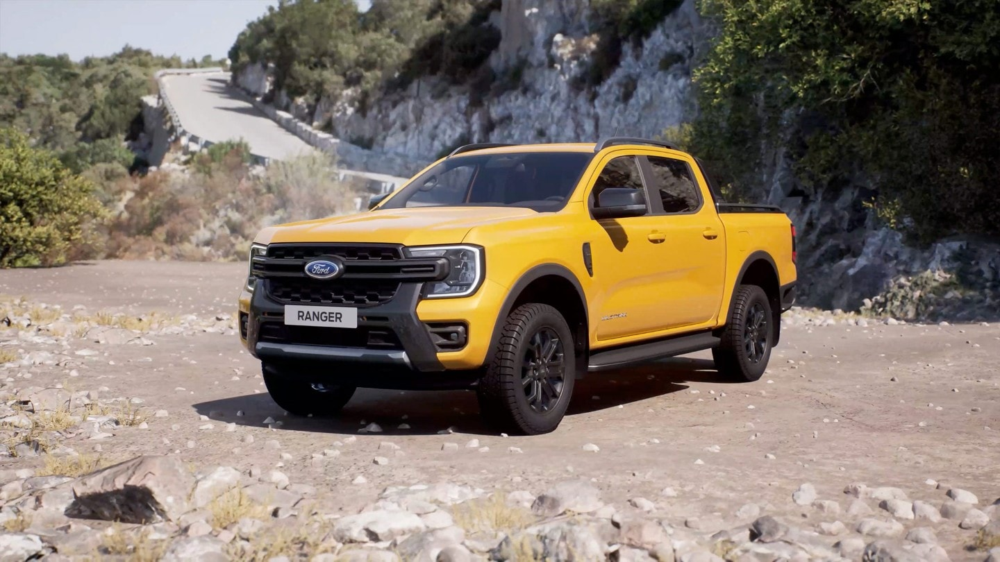
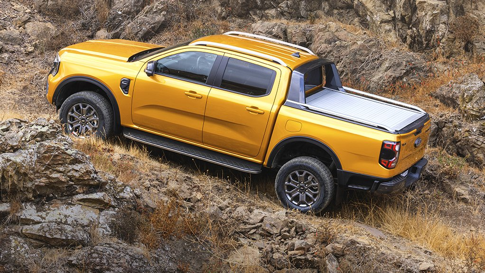
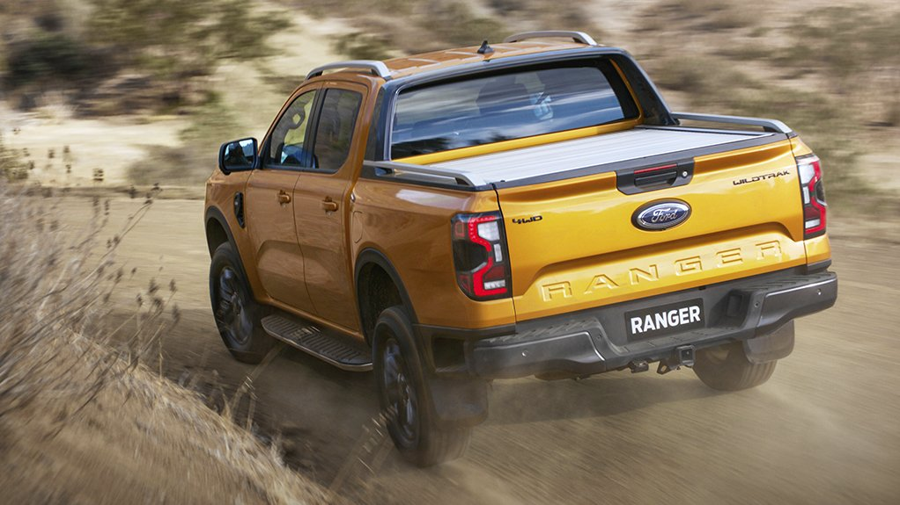
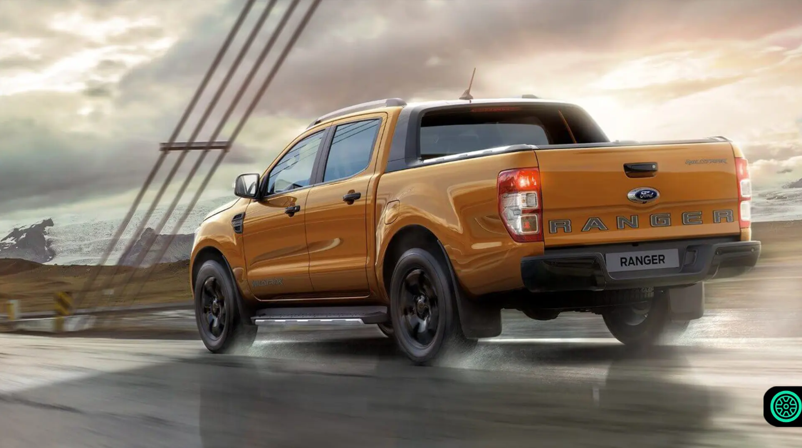

| RANGER STORMTRAK 2.0 TDCI 213LE |
Nettó ár |
ÁFA |
Bruttó ár |
| Alapmodell |
14.000.000 |
2.000.000 |
16.000.000 | B>
| Normál Felszereltség |
18.000.000 |
2.000.000 |
20.000.000 |
| Full Extra |
24.000.000 |
2.000.000 |
26.000.000 |
| Műszaki adatok |
|
| Kivitel |
Pick up |
| Ajtók száma |
4 |
| Szállítható személyek száma |
5fő |
| Saját tömeg |
1 576 kg |
| Üzemanyagtank |
60 liter |
| Üzemanyag |
Dízel |
| Hengerek száma |
6 henger |
| Sebességváltó |
Manuális (6 fokozatú) |
| Hengerűrtartalom |
1 996 cm³ |
| Végsebesség |
200 km/h |
| Maximális teljesítmény |
157 kW, 213 LE |
| Gumiméret |
255/75 R18 |







"""
12 voltos elektromos csatlakozó a platón
12 voltos hátsó elektromos csatlakozó
18" fekete könnyűfém keréktárcsa- 265/60r18 terepgumik
18"-os könnyűfém pótkerék
2 db távirányítós kulcs
2. sori 3 személyes utasülés fejtámasszal
230 voltos elektromos csatlakozó
4 irányban manuálisan állítható utasülés
8 irányban elektromosan állítható vezetőülés
Abs blokkolásgátló rendszer- kipörgésgátlóval, esp menetstabilizáló rendszer
Aerodinamikus bukócső
Alsó motor- és osztóműburkolat
Automata fényszóróvezérlés (le- és felkapcsolás)
Automatikusan elsötétedő belső visszapillantó tükör
Belső hangulatfény
Bőr kormánykerék kontrasztos varrással
Bőr váltógomb borítás
Egyedi 3d stromtrak felirat
Egyedi bőr ajtókárpit
Egyedi fekete hűtőrács
Egyedi stormtrak sip matricaszett
Elektromos első ablakemelők- automata fel-le funkcióval a vezető oldalon
Elektromos hátsó ablakemelők
Elektromos platóroló
Elektromosan állítható, fűtött, behajtható külső tükrök integrált irányjelzővel,
Elektronikus szervokormány
Első és hátsó parkolóradar
Első és hátsó sárfogó gumik
Esőérzékelős ablaktörlők
Extra burkolat az üzemanyagtartályon
Fekete kilincsek
Fekete platóajtó kilincs
Fekete sárvédő betét
Fekete tetőkárpit
Fekete tükörház
Fordpass connect
Fényszórómagasság állítás
Függönylégzsák
Fűthető első szélvédő
Fűthető vezető- és utasülés
Gyerekzár a hátsó ajtón
Harmadik féklámpa
Hátsó ablakfűtés
Hátsó differenciálmű- alsó motor- és osztóműburkolat
Hátsó ködfényszóró
Hátsó szürke lökhárító fellépővel
Ice csomag 129- am/fm rádió + dab + sync3 (tmc + rds)- 2 db usb csatlakozó- bluetooth
Isofix rendszer
Keréknyomás-figyelő rendszer
Kettős központi zár
Krómozott belső ajtónyitók
Kulcsnélküli ajtónyitó és indítórendszer
Kétszólamű kürt
Kétzónás elektromos automata klímaberendezés
Központi zárral zárható platóajtó
Led első ködfényszórók
Led fényszórók
Műbőr kozépkonzol
Nappali menetfény
Napszemüveg tartó
Oldallégzsák
Oldalsó fellépő
Platóajtó könnyített nyitással
Programozható üzemanyag tüzelésű állófűtés
Prémium középső kartámasz hűthető rekesszel a középkonzolon
Prémium szőnyegek a hátsó sorban
Prémium szőnyegek az első sorban
Puha tapintású kézifékkar króm gombbal
Pótkerék zár
Rakományrögzítő fülek
Rakományrögzítő rendszer a platón
Rakományrögzítők a plató falán kívül
Raktérbetét
Raktérelválasztó
Sebességtartó automatika- vészfékezési asszisztens- sávelhagyásra figyelmeztetés
Start-stop rendszer
Színre fújt első lökhárító
Sötétített üvegek
Tetősín
Tolatókamera
Térképtartó a vezetőülés háttámláján
Térérzékelős riasztóberendezés
Utas oldali napellenző megvilágított tükörrel, elhúzható takaróelemmel
Utasoldali légzsák
Utasoldali légzsák deaktiválás
Vezető oldali napellenző megvilágított tükörrel, elhúzható takaróelemmel
Vezető. és utasoldali biztonsági öv figyelmeztetés
Vezetőoldali légzsák
Vezetőoldali térdlégzsák
Vonóhorog
Wildtrak funkcionális csomag 131*- automata parkolórendszer - csak párhuzamos parkoláshoz
Ütközésmegelőző rendszer
Ütéscsillapító biztonsági hab a lökhárítóban
"""
2022